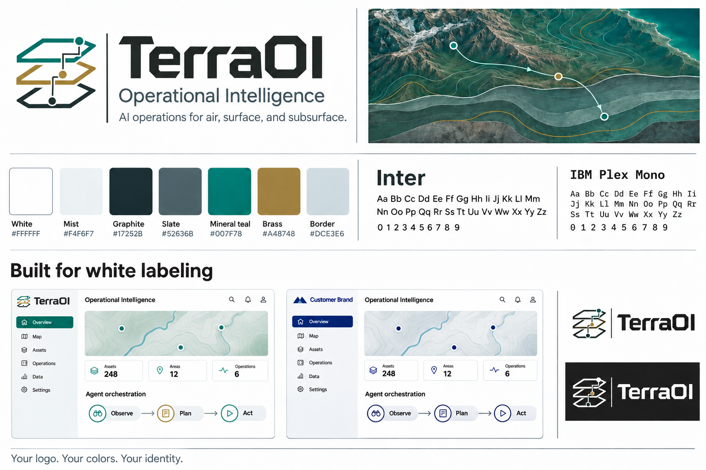

Operational Intelligence
One system.
Your identity.
An editable identity kit for coordinated intelligence across air, surface, and subsurface.
Explore the dashboardAgentic visual language
Connected nodes express coordination. Brass marks the planning layer. Every action stays within its permissions.
Color foundation
#FFFFFF
#F4F6F7
#17252B
#52636B
#007F78
#A48748
#DCE3E6
Customer mode replaces primary and accent colors. Operational status colors retain their meaning.
Templates and guides
01 / Template
Login screen
A focused entry to the operational workspace.
02 / Template
Dashboard
Coverage, activity, and agent coordination.
03 / Template
Agent workspace
Observe, plan, and review proposed actions.
04 / Template
Navigation
Responsive navigation and reusable components.
05 / Template
Reports
A print-ready operational report template.
06 / Template
Exported documents
A print-ready decision record template.
07 / Template
Emails
A notification preview plus editable email source.
08 / Template
Brand guide
Identity rules, colors, typography, and usage.
09 / Template
AI agent guide
Instructions for consistent future changes.
Logo artwork
SVG masters contain an outlined geometric wordmark. PNG copies and favicon sizes are in the identity folder.
Editable document downloads
Concept reference
The original concept board records the design direction. Editable vector masters above are the implementation source.
